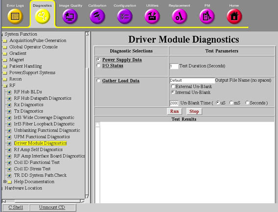

Operating Documentation
Direction 5500113, Rev# 3
Discovery MR450 1.5T Service Methods
Module Version 2.0, Version Date 8/19/08
Operating Documentation |
Diagnostics>>System Fuction>>RF>>Driver Module Diagnostics
Illustration 1: Driver Module Diagnostics

This test checks the current draw on the Dynamic Disable (DD) and the Transmit/Receive (TR) bias lines.
Driver Module
LPCA
Cables
Connectors
Coil (if connected)
None
The data is sampled five (5) times for each line and then written to two (2) text files in /usr/g/service/log. You can then use the “more” or “cat” commands to view the contents of these files.
The data in each file is reported in Open (forward bias) and Short-circuit (reverse bias) modes. These modes refer to the fault conditions for which the Driver Module is always monitoring.
Values much greater than the typical values may indicate circuit damage or a short-circuit condition somewhere in the bias path. Values much less than the typical values may indicate circuit damage or an open-circuit (maybe a disconnected cable) condition somewhere in the bias path.
Run this test to troubleshoot intermittent problems and collect baseline data on any new surface coil. If troubleshooting one of these two scenarios, refer to the System Block Diagrams to help isolate the fault.